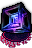

Zot:5
英語版 CrawlWiki の記事「Zot:5」(0.34 向け、2026-10-06 版)の翻訳です。原文の著者は編集履歴をご覧ください。
ゾットの領域:5はゾットの領域の最下層だ。階の一部はゾットの領域:1〜4と似た作りだが、残りはゾットの大広間(オーブの部屋とも呼ばれる)という巨大な固定ヴォールトが占めていて、そこにゾットのオーブが置かれている。オーブを拾ったら迷宮を上って脱出すれば、ゲームクリアだ。
オーブの部屋は、ゲーム中で通り抜けなければならない場所のなかでも指折りの危険地帯だ。壁はほぼすべて破壊できず、モンスターが群れで押し寄せてきやすい造りになっている。特に危ないモンスターは次のとおり。
- *


 お誂え向きの球体: 火を操る炎の球体、冷気を操る冬の球体、負のエネルギーと腐食を操るエントロピーの球体の3種類がいる。どれも速く、とんでもなく打たれ強く、攻撃は強烈で、厄介な状態異常までかけてくる。1回のゲームでゾットに出るのはこのうち1種類だけだ。
お誂え向きの球体: 火を操る炎の球体、冷気を操る冬の球体、負のエネルギーと腐食を操るエントロピーの球体の3種類がいる。どれも速く、とんでもなく打たれ強く、攻撃は強烈で、厄介な状態異常までかけてくる。1回のゲームでゾットに出るのはこのうち1種類だけだ。 - L
 太古のリッチ: 非常に強力な呪文使いで、妖術の凶悪な呪文(レフディブの水晶槍、腐食の矢)を撃ってくる。
太古のリッチ: 非常に強力な呪文使いで、妖術の凶悪な呪文(レフディブの水晶槍、腐食の矢)を撃ってくる。 - L
 恐怖のリッチ: 太古のリッチの召喚版で、こちらを麻痺させたり、危険な1級・2級悪魔を呼び出したりする。
恐怖のリッチ: 太古のリッチの召喚版で、こちらを麻痺させたり、危険な1級・2級悪魔を呼び出したりする。 - X
 オーブの守護者: ゾットの領域:5のほかの面々に比べれば地味だが、強くて足が速い近接型のモンスターで、しかも数が多い。
オーブの守護者: ゾットの領域:5のほかの面々に比べれば地味だが、強くて足が速い近接型のモンスターで、しかも数が多い。 - p
 殺人ピエロ: 予測のつかない瞬間移動をくり返す厄介者で、投げてくるパイでいろいろな嫌な効果をかけてくる。
殺人ピエロ: 予測のつかない瞬間移動をくり返す厄介者で、投げてくるパイでいろいろな嫌な効果をかけてくる。 - C
 変幻の始祖: 速くて頑丈な巨人。放射の光を浴びせてくるうえ、死ぬと強化されたモンスターに分裂する。
変幻の始祖: 速くて頑丈な巨人。放射の光を浴びせてくるうえ、死ぬと強化されたモンスターに分裂する。 - z
 呪いの足指: 腐った足指。拷問を浴びせてきたり、キノコの輪でこちらを閉じ込めたりする。
呪いの足指: 腐った足指。拷問を浴びせてきたり、キノコの輪でこちらを閉じ込めたりする。 - y
 幽体蛾: 常に透明な恐ろしい蛾で、あっという間にMPを吸い尽くしてくる。
幽体蛾: 常に透明な恐ろしい蛾で、あっという間にMPを吸い尽くしてくる。 - D
 ゴールドドラゴン: ほかにもあらゆるドラゴンやドラコニアンが出る。水銀ドラゴンと紫ドラコニアンには特に気をつけよう。こちらの強化効果を消してくる!
ゴールドドラゴン: ほかにもあらゆるドラゴンやドラコニアンが出る。水銀ドラゴンと紫ドラコニアンには特に気をつけよう。こちらの強化効果を消してくる!
正面から突っ込むのはまず自殺行為だ。生きて帰るには、自分のキャラクターの構成を見直し、それに合った攻め方を考えておこう。以下では役に立つ情報と、よく使われる戦略をまとめる。
目次
仕組み
ゾットのほかの階と同じく、テレポートは発動が遅れ、瞬間移動の巻物は着地点が最大2マスずれることがある。
オーブの守護者を1体でも倒すと、この階にある2体の果てなきテッセラクトが起動する。テッセラクトは時間をかけて少しずつ、強力な敵をランダムな場所に呼び出す。片方を壊せば両方とも壊れる。
ゾットのオーブに収拾を使うと33%の確率で失敗し、失敗しても大きな騒音が出る。
準備するもの
オーブの部屋を生き延びるのに役立つアイテム・能力・体質を、だいたい重要な順に挙げる。
- キャラクターに関係する能力値が高いこと: HP(戦闘スキル)、MP(呪文詠唱か祈祷)、経験レベル、AC、EV、SH、信仰心など。
- 出てくる球体に対応した耐性。炎の球体なら火炎耐性、冬の球体なら冷気耐性が要る。エントロピーの球体には負のエネルギー耐性と腐食耐性が要る。1段階は必須で、装備を犠牲にしない範囲でできるだけ積んでおきたい。
- リッチ対策に高い意志力(麻痺を確実に防ぐならWill++++以上)。
- 火力と機動力を上げる手段: スピードの薬、怪力の薬/知性の薬、神の能力(オカワルの早業など)、なんでもいい。
- 無力化の薬。自分か敵が、いちばん近い階段から遠いところで警報の罠を作動させたとき、番兵の標的の状態を消すのに使う。
- 電気のゴーレム対策の電撃耐性。
- HPの再生やMPの回復を早める手段。テッセラクトが起動したあと、休む時間を短くできる。アンブロシアの薬はMPをすばやく回復でき、HPも回復する。
- リッチ、ドラコニアンの騎士、幽体蛾への対策に霊視。
下準備
- ゾットの領域:1〜4を片づけておく。必須ではないが、経験値がたくさん入るし、オーブを持っての脱出も安全になる。特にゾットの領域:4は掃除しておくのがおすすめだ。標的状態になったとき、確実に安全な階へ逃げ込める。
- 啓示の巻物があるなら、ゾットの領域:5に着いたところで読んで部屋の構造を確かめておこう。オーブの部屋の入口を注意対象に指定しておけば、自動探索で入り込まずに済む(shift-xで入口を選び、eを2回押すとそのマスがふさがる)。
- ゾットの領域:5から逃げるときの安全を確保するため、オーブの守護者を倒す前に部屋の外を全部片づけておく。このあたりはゾットの上の階と似た作りだ。ただし果てなきテッセラクトはこの区域にも敵を呼び出すし、敵がたまにテレポートの罠を踏んで飛んでくることもあるので、片づけても100%安全とはいかない。
- 掘削のワンドの回数に余裕があるなら、オーブの部屋の入口近くにキルホールを掘っておくといい。一度に相手にする危険なモンスターの数を減らせる。自分の逃げ道は必ず残しておくこと。テレポートで逃げようにも発動が遅いうえ、オーブの部屋の中に飛ばされるおそれまである。
- オーブの部屋に入る前に、装備とアイテムが整っているかもう一度確かめよう。テッセラクトが起動してから階を行き来して時間を無駄にしたくはない。
テッセラクト
ほとんどのキャラクターは、I 

とはいえ、テッセラクトを急いで壊しに行かなければならないわけではない。たいていのキャラクターは、すぐに突っ込んでもまずうまくいかない。押し寄せるモンスターの群れは手に負えないし、テッセラクト自体も毎ターンHPが10回復するという驚異的な再生力を持っている。それに、テッセラクトが敵を呼び出すのは自分のまわりではなく階のあちこちなので、新しく出たモンスターにすぐ「守られる」こともない。
モンスター別の対策
球体
*  炎の球体/*
炎の球体/*  冬の球体/*
冬の球体/*  エントロピーの球体は、そのゲームで出てきたのがどれであれ、ゾットの領域:5でいちばん恐ろしいモンスターの一つになる。対応する耐性がないと、とてつもないダメージをあっという間に叩き込んでくる。瞬間的な大火力で倒しきれないかぎり、あとまで響く痛手を負うのはまず避けられない。どの球体も単体で非常に危険なので、ほかにも手強いモンスターを引き寄せてしまったら、逃げ出すのが賢明だ。
エントロピーの球体は、そのゲームで出てきたのがどれであれ、ゾットの領域:5でいちばん恐ろしいモンスターの一つになる。対応する耐性がないと、とてつもないダメージをあっという間に叩き込んでくる。瞬間的な大火力で倒しきれないかぎり、あとまで響く痛手を負うのはまず避けられない。どの球体も単体で非常に危険なので、ほかにも手強いモンスターを引き寄せてしまったら、逃げ出すのが賢明だ。
どの球体が出るかは、諸宗派の寺院とゾットの入口のすぐ外にある彫像を見ればわかる。
- 安全な戦い方はない。HPも防御も非常に高く、ほぼすべての属性に耐性があり、召喚したしもべを呼び出すそばからかみ砕いていけるほどの火力を持っている。
- 近接戦闘型は、手に入るなら得意な武器種の強い反魔法の武器を使うといい。ただ、このブランドでなくてもかまわない。それがなければ、重い一撃で戦う近接型は火炎/冷気/重撃を、手数で戦うタイプは歪曲か混沌を好むだろう。
- 妖術師は、抵抗されない妖術のなかでいちばん強力なものを撃とう。砲撃/レフディブの水晶槍、破壊の爆裂球、マクスウェルの容量結合、あるいはレベル9の呪文ならなんでもいい。
- 召喚術師なら邪悪なる通り道が輝く。出てくる触手は3種類の球体のどれにも完全に耐性があるうえ、大きなダメージを返してくれる。招霊や、(もちろん)ドラゴンの呼び声も強力だ。
- 鍛造術の使い手は魔火花の従者、業火の迫撃砲、白金の傑作に頼れる。魔火花の従者は火力が高く、火・冷気・負のエネルギーに強い耐性がある。業火の迫撃砲は炎以外の球体によく効く。炎の球体へのダメージは落ちるが、迫撃砲そのものは炎が効かない。
- やりすぎということはない。出し惜しみはなしだ。怪力の薬、知性の薬、スピードの薬、耐性の薬、強酸のワンド(エントロピーの球体には効かない)、オカワルの早業やシフ・ムーナの神聖なる釈義といった神の能力……。とにかく、できることは全部やって一刻も早く倒そう。
- 炎の球体は銀に弱い(ほかの球体は弱くない)。投擲を十分に(16以上)鍛えているなら、銀のジャベリンが恐ろしく役に立つ。
リッチ
L  太古のリッチとL
太古のリッチとL  恐怖のリッチも非常に危険なモンスターだ。どちらにも同じ対策が通じる。自分を強化して、相手の弱点を突きまくろう。太古のリッチはいつでも腐食の矢か水晶槍を撃ってきて大ダメージを与えてくるし、恐怖のリッチは凶悪な悪魔を呼び出し、拷問と天罰を放ってくる。
恐怖のリッチも非常に危険なモンスターだ。どちらにも同じ対策が通じる。自分を強化して、相手の弱点を突きまくろう。太古のリッチはいつでも腐食の矢か水晶槍を撃ってきて大ダメージを与えてくるし、恐怖のリッチは凶悪な悪魔を呼び出し、拷問と天罰を放ってくる。
- 理想は、恐怖のリッチが悪魔の援軍をたくさん呼び出す前に倒す(か無力化する)ことだ。厄介なものを呼ばれてしまったら、召喚した本人を倒すのが召喚物を消すいちばんの早道だと覚えておこう。歩いて逃げたり、行き先任せの瞬間移動で逃げたりすると、拷問と天罰で死ぬことが多い。そうなる前にリッチを片づけよう!
- 静寂に包まれたリッチは、弱い近接攻撃くらいしか身を守る手段がない。HPが少ないときは命取りになるが、そうでなければたいしたことはない。ただし、まわりにほかの敵がいないことは必ず確かめること。炎の球体は静寂の影響を受けないが、あなたは受ける。
- リッチの石化や麻痺の呪文に抵抗できるよう、意志力を高くしておこう。炎の球体の隣で麻痺したら、まず助からない。
- ほかの倒し方としては、反魔法か神罰のよい武器(反魔法のショートソードはよい武器とはいえない)、アンデッドの解呪、破壊の爆裂球、粉砕、砲撃、炎の嵐、魔火花の従者などがある。
殺人ピエロ
p  殺人ピエロは単体ではそれほど危険ではないが、ピエロのパイの投擲でいろいろな嫌な状態異常をかけてくる。静寂や薬×をかけられることがあり、どちらも逃げ手段を大きく狭めてしまう。受けるダメージが+50%になる効果もある。
殺人ピエロは単体ではそれほど危険ではないが、ピエロのパイの投擲でいろいろな嫌な状態異常をかけてくる。静寂や薬×をかけられることがあり、どちらも逃げ手段を大きく狭めてしまう。受けるダメージが+50%になる効果もある。
その他
モンスターを見つけたら、そのつど気を引いて安全な場所まで下がり、そこで倒すようにしよう。遠隔攻撃を持つもの(殺人ピエロ、ドラゴンやドラコニアン、電気のゴーレム)は追いかけながら撃ってくるので、曲がり角の陰に隠れて追ってこさせる必要があるかもしれない。
- X オーブの守護者は速くて強いが、本当の怖さはゾットの領域:5のほかの住人といっしょに群がってくるところにある。これはできるかぎり避けよう。オーブの守護者を倒すと果てなきテッセラクトが起動する。
- y
 憤怒せる蛾はモンスターやあなたをバーサーク状態にすることがある。オーブの守護者の群れがそうなったときには、その場に居合わせないようにしたい。
憤怒せる蛾はモンスターやあなたをバーサーク状態にすることがある。オーブの守護者の群れがそうなったときには、その場に居合わせないようにしたい。 - q
 ドラコニアンの移相者は、あなたを不利な位置に瞬間移動させてくる。しかも紫ドラコニアンなので、こちらの強化効果をほとんど消してしまえる。ほかの敵と戦っている最中に現れると非常に危険だ。
ドラコニアンの移相者は、あなたを不利な位置に瞬間移動させてくる。しかも紫ドラコニアンなので、こちらの強化効果をほとんど消してしまえる。ほかの敵と戦っている最中に現れると非常に危険だ。
敵は標的が見えていなければ呪文を唱えない。相手をしないまま視界に入れておく時間は、なるべく短くしよう。近接型のキャラクターは、曲がり角の向こうへ下がって相手を近接攻撃の間合いまで引き寄せるといい。こちらから駆け寄ると、そのあいだに何ターンも水晶槍を撃たれたり悪魔を呼ばれたりするし、未探索の区域に踏み込めばさらに多くの敵に出くわすことにもなりやすい。
罠への対策
設置された罠
モンスターも罠を踏めば作動させられるし、たいていそれで害を受けるのはあなたのほうだ。罠にかからないいちばんの方法は、その罠の視界に入らないこと。次善の策は、モンスターに罠を踏ませないことだ。モンスターはふつう、わざわざ罠のマスに踏み込んだりはしない(罠のマスに移動してくるのは、そこが普通の床でも移動してくる場合に限られる)。
左右二つの「肺」のうち片方は、入口が設置された罠でふさがれていないことが保証されている。ただし入口のまわりにはほかにも罠が多い。
 警報の罠はとてつもなく大きな音を立て、あなたを標的状態にする。オーブの部屋の構造上、全部が目を覚ますとは限らないが、大量のモンスターがあなたのところへ集まってくる。
警報の罠はとてつもなく大きな音を立て、あなたを標的状態にする。オーブの部屋の構造上、全部が目を覚ますとは限らないが、大量のモンスターがあなたのところへ集まってくる。
危険はあるが、警報の罠をわざと鳴らして有利に使うこともできる。罠を作動させ、必要なら標的状態を無力化し、加速して(オーブの守護者などを振り切れるように)、好きな場所まで逃げるのだ。
- キャラクターが十分に強いなら、キルホールを掘って、大群を比較的安全に迎え撃てる。
- 上り階段で引き返し、ゾットの領域:4で休んでから別の階段で降りる手もある。肺の中にいたモンスターが外をうろつくようになるので、少しずつおびき寄せて倒せる(肺の中で全部まとめて相手にせずに済む)。3本の階段がどれも近くにあるなら、この手は使わないこと。
ゾットの領域:5を完全に片づけたなら、オーブを拾う前に警報の罠を踏んでおくのが最善だ。そうしておけば、オーブを持っての脱出中に罠が作動することはない。
 よく注意していないと、転送の罠は命取りになりかねない。
よく注意していないと、転送の罠は命取りになりかねない。
- 肺の中に飛ばされて、何体もの炎の球体(やその他もろもろの脅威)のど真ん中に放り込まれることがある。
- 瞬間移動の巻物を読んだのに、転送で元の場所に戻されることがある。
- 逃げている最中に、転送で敵の近くへ飛ばされることがある。
転送の罠のまわりを歩くときは十分に気をつけよう。視界に入っているだけで、状況が格段に危うくなる。
 網の罠にかかると投げ網に絡め取られる(EVが半分になり、移動と武器での攻撃ができなくなる)。モンスターが踏んだ場合も、33%の確率であなたの上に網が落ちてくる。網からは、瞬間移動(呪文か巻物)やテレポートで抜け出すか、何ターンかもがいて抜け出せる。
網の罠にかかると投げ網に絡め取られる(EVが半分になり、移動と武器での攻撃ができなくなる)。モンスターが踏んだ場合も、33%の確率であなたの上に網が落ちてくる。網からは、瞬間移動(呪文か巻物)やテレポートで抜け出すか、何ターンかもがいて抜け出せる。
 設置されたテレポートの罠は、ほかの罠ほど命に関わるものではないが、それでも気にしておく価値はある。テレポートで消えたモンスターは覚えておいたほうがいい。最悪の場合、逃げようとしているところで背後に炎の球体が現れる。
設置されたテレポートの罠は、ほかの罠ほど命に関わるものではないが、それでも気にしておく価値はある。テレポートで消えたモンスターは覚えておいたほうがいい。最悪の場合、逃げようとしているところで背後に炎の球体が現れる。
テレポートの巻物と違って、テレポートの罠はすぐに効果が出る。いざというときは、テレポートの罠でまずい状況からの脱出を図れる(テレポートの巻物を読んでからテレポートの罠を踏む手もある。罠でいい場所に出られたら、もう1枚巻物を読んで発動待ちのテレポートを取り消す。そうでなければ、立て続けに2回目のテレポートが起きる)。
 道化の罠はモンスターに混沌の力を与える。麻痺や減速といった致命的な効果をかけられるおそれがある。
道化の罠はモンスターに混沌の力を与える。麻痺や減速といった致命的な効果をかけられるおそれがある。
 ゾットの罠はいちばん恐ろしい罠だ。あなたを麻痺させることがあり、炎の球体や太古のリッチの隣で、あるいは何体もの炎の球体やリッチの隣で4ターン麻痺すれば、まず死ぬ。ほかにも嫌な効果がたくさんあり、詳しくはゾットの罠のページにまとめてある。転送の罠と同じく、モンスターに踏ませないよう全力を尽くそう。
ゾットの罠はいちばん恐ろしい罠だ。あなたを麻痺させることがあり、炎の球体や太古のリッチの隣で、あるいは何体もの炎の球体やリッチの隣で4ターン麻痺すれば、まず死ぬ。ほかにも嫌な効果がたくさんあり、詳しくはゾットの罠のページにまとめてある。転送の罠と同じく、モンスターに踏ませないよう全力を尽くそう。
悪意
ゾットの領域:5に縦穴で落ちてくることはないが、出どころのない悪意で警報やテレポートの効果が起きることはある。オーブの部屋にテレポートで飛ばされるのは、ゾットの領域:5で起こりうる最悪の事態だ。ゲームのほかの段階での悪意と同じく、防ぐ手立てはほとんどない。
-Teleのついたアーティファクトがあればテレポートの効果は防げるが、瞬間移動の巻物やテレポートの巻物も使えなくなるし、この属性は外すのに5ターンかかる装備品にしかつかない。そもそも-Teleのアーティファクトが見つかるとは限らず、使えるものとなればなおさらだ。もし手に入ったら、-Teleをつけたまま外側を片づけ、外してから肺に入るという手がある。
全体の戦略
注意: 以下の戦略は特定の能力や戦術を前提にしているので、あなたのキャラクターには当てはまらないかもしれない!
少しずつ部屋を片づける
いちばん素直な戦略は、部屋に入ってなるべく少ないモンスターだけを起こし、下がって1体ずつ倒すことだ。あとはこれをくり返す。オーブの部屋に隣り合う二つの区域を探索するときは、仕切りの壁に沿って進み、曲がり角からのぞいて、見つけたモンスターを引っぱってこよう。強引に進むと、一度にさばききれないほどの脅威を呼び込むことになりやすい。
この戦略は騒音をうまく使えばやりやすい(注意を引くには、叫ぶ、騒音の巻物を読む、呪文を唱えるのが確実だ)。音を立ててモンスターを何体か呼び寄せ、追いかけさせて逃げる。ただ、部屋の造りとオーブの守護者の巡回のせいで、群れに飲み込まれずにこれをやるのは難しいかもしれない。テッセラクトが起動してからは、時間をかけすぎないようにも気をつけよう。
軍勢を率いて乗り込む
できるなら、なるべくたくさんのしもべを呼び出そう。あとはしもべが敵と戦っているあいだ、後ろに控えていればいい。やり方はいろいろある。
- 神のしもべ: 輝けるものの天使やデーヴァ、トログの戦友の召喚、マクレブの悪魔、キクバークッグァのアンデッドの軍勢……
- 召喚術の呪文: 妥協する理由がどこにある? ドラゴンの呼び声に代わるものはない。
- ゴザーグの信者はゾットの住人を買収できる。炎の球体が味方につけば、この階全体がもはや冗談みたいなものだ。
火力で押し通る
妖術に特化していて、MPを確実に補給する手段(魔力の薬、シフ・ムーナの魔力回復強化、血の昇華など)があるなら、レフディブの水晶槍、破壊の爆裂球、炎の嵐、粉砕といった上位の呪文で、単純に吹き飛ばしながら進めることも多い。魔火花の従者を連れているならなおさらだ。騒音には気をつけ、MPでさばききれないほどのモンスターを呼び寄せないようにし、必要ならためらわずに下がって立て直そう。
「肺」の壁を壊す
それぞれの区画の入口は石の壁で囲まれている。たいていのキャラクターには壊せないが、壊せるキャラクターもいて、ゾットの領域:5を自分の土俵で戦える。肺の壁を壊せば、敵に前後から挟まれずに済むし、厄介な位置にある罠を避けられるし、テッセラクトまでの近道を作ったり、オーブまで一気に駆け込む短い道を作ったりもできる。
- ルゴヌがいれば、オーブの部屋はずっと怖くなくなる。石の壁越しに階層の崩壊を使えばオーブの部屋までの道が開けるうえ、悪魔が大量に出てくる(悪魔たちが敵をたくさん片づけてくれる)。威勢のいい冒険者なら、加速して瞬間移動の巻物やテレポートの巻物などを使い、オーブを取ってこられる。
- いざとなれば、自分をアビスに追放すれば命拾いでき、回復する機会も得られる。ただし、戻ってくるのは出発したのとまったく同じ場所だということは忘れないように。
- フェダスの信者にも、似たような壁壊しの能力「繁茂」がある。階層の崩壊ほど目に見えて強力ではないが、壁を壊して敵を比較的安全な場所へおびき寄せることはできる。壁を壊したあとはオクロブ草がかなり役に立つ。rCorrを持つ敵は黄色ドラコニアンとエントロピーの球体だけだからだ。
- 粉砕が使えるなら、石の壁も壊せる。ただし、その際にとんでもない騒音が出る。残念ながら、粉砕は炎の球体、電気のゴーレム、ドラゴンにはあまり効かない(リッチやピエロなどには効く)。シフ・ムーナの神聖なる釈義で粉砕を唱えることもできる。
隠密/急所攻撃
オーブの部屋に入り、眠っているモンスター(オーブの守護者、太古のリッチ、炎の球体など)に急所攻撃を狙う。できれば影のスカーフを使って、相手にする敵の数を絞ろう。この方法を試すなら、逃げる手段を必ず用意し、隠密をできるかぎり積んでおくこと。オーブの守護者が目を覚ましたら、ほかのモンスターを起こさないよう部屋の外まで引っぱり出してから戦おう。オーブが見えるところまで来たら、拾ってテレポートで逃げる。
マップ
モンスター(オーブの守護者とテッセラクトを除く)と罠はランダムに配置され、オーブの部屋は上下どちらかの向きになる。部屋の中でのオーブの位置は常に同じだ。モンスターは完全なランダムではなく、部屋の左右それぞれに、球体(その回の種類)、リッチ、ピエロのどれかが多めに出る。


ヴォールトのコード全体はdat/des/branches/zot.des:2719(0.30.1)を参照。
変更履歴
- 0.34より前は、瞬間移動の巻物は普通に使えて、果てなきテッセラクトは存在せず、お誂え向きの球体は炎の球体しかいなかった。そのかわり、ゾットに出るモンスターは少しだけ多かった。
- 0.33より前は、両方の肺の入口が同時に罠でふさがれることがあった(このバージョンでも、見落としのせいでごくまれに起こる)。これは「ダブルトラップのゾット」と呼ばれ、対処が難しかった。
- 0.31より前は、殺人ピエロのピエロのパイの投擲でプレイヤーが変化させられることがあった。装備スロットのほとんど、あるいはすべてを失う(つまり耐性も意志力もACも失う)ので、特に危険な脅威だった。変幻の始祖はこのバージョンで追加された。
- 0.27より前は、太古のリッチの呪文書は5種類あり、召喚、さまざまな呪術、多様な強力な妖術を使う可能性があった。0.27で呪文書の候補がまとめられ、召喚専門の恐怖のリッチが加わった。
- 0.26より前は、ゾットのオーブによる転位の制限がもっと厳しかった。瞬間移動の巻物や精密瞬間移動で行き先を選べず、ゴルブリアの通り道はまったく使えなかった。
- 0.23より前は、ゾットの領域:5の罠の構成が大きく違っていた。罠はたいてい床に隠されていて、転送の罠は存在しなかった。